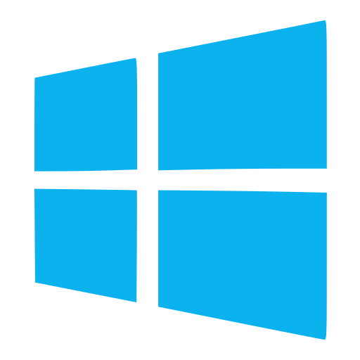

Desvendando a Tecnologia
Desvendando a Tecnologia
Software
O que é o software?
O software é um conjunto de instruções que, ao serem executadas, fornecem funções e desempenhos desejados. Descrito de forma simples, o software é basicamente um programa de computador. Ele pode ser dividido em duas categorias principais: software de sistema e software de aplicativo.
Software de Sistema
O software de sistema consiste em uma coleção de programas que apoiam outros programas, realizando tarefas de gerenciamento, por exemplo. Essa categoria inclui o software operacional e o software utilitário.
-
Software operacional:
Também conhecido como sistema operacional, é o software responsável pelo funcionamento geral dos sistemas de computação. Exemplos incluem Windows, Linux e MacOS.


-
Software utilitário:
Auxilia o software operacional, realizando funções como gerenciamento de dispositivos e proteção contra vírus. Exemplos: Avast, AVG, CCleaner.
Software Aplicativo
Também conhecido como app, é projetado para ajudar o usuário a realizar tarefas específicas, como editar vídeos, criar planilhas ou navegar na internet. Exemplos: Sony Vegas, Excel, Google Chrome.